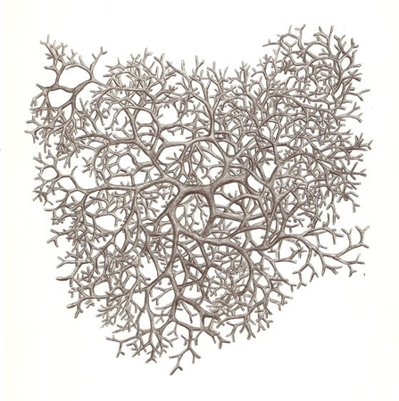
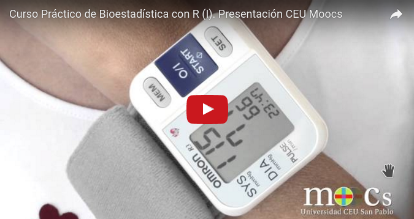

Innovación en la docencia de Estadística
con R y rk.Teaching
18 de Junio de 2016
Castro Urdiales

La apuesta por el conocimiento y el software libre

La curva de aprendizaje de R

La interfaz gráfica RKWard
- Software libre
- Multiplataforma
- Fácilmente ampliable mediante un sistema de plugins
- Basada en librerías gráficas Qt
- Salida en formato html
- Orientada tanto a usuarios que no conocen R como a programadores
Principios de diseño
- Intuición
- Simplicidad
- Asistencia al usuario
- Interpretación de resultados
- Pedagogía
Experiencia docente presencial
Experiencia docente no presencial
